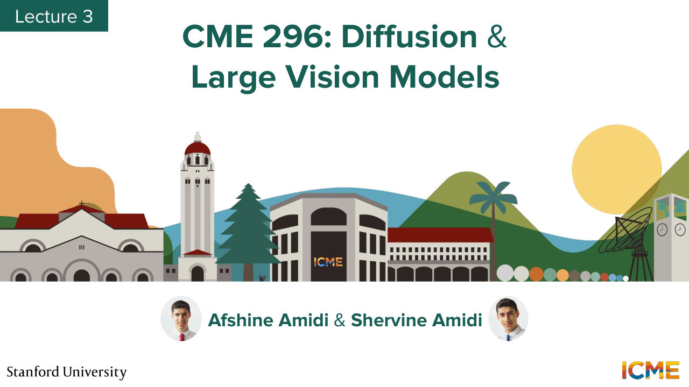
0:00 0:05 Hello, everyone, and welcome to lecture 3 of CME 296. So today is a very special day because we're going to talk about flow matching, which
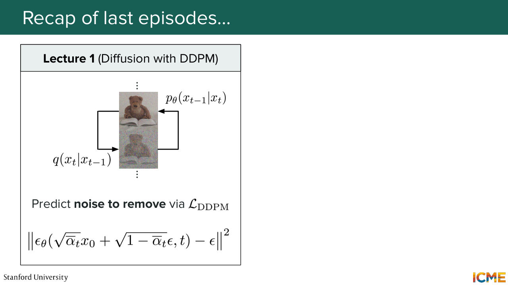
0:19 is a generation paradigm that is quite trendy these days.
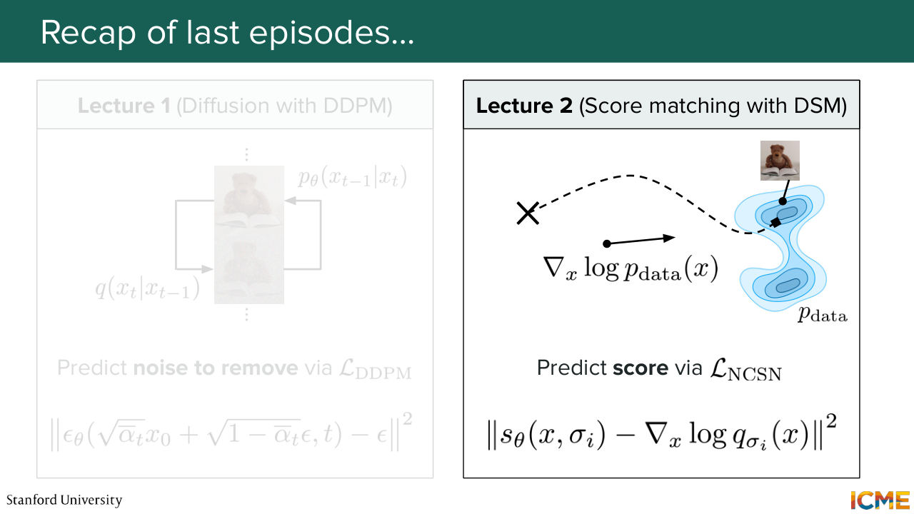
0:24 So if you're a member, lectures 1 and lecture 2 were also about generation paradigm where we talked about diffusion with DPM and lecture 1 and score matching in lecture 2. So flow matching is yet another generation paradigm. And we're going to see in this lecture what is the mindset behind that separate paradigm and how it relates to diffusion and score matching.
0:55 So as usual we're going to start the class with a recap of the last episodes. So if you remember lecture 1, we saw how we could generate new samples,
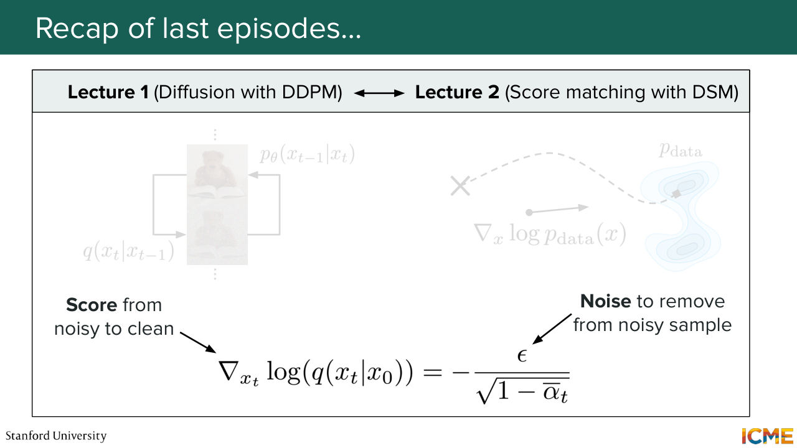
1:11 and the way we thought about doing that was taking images from our training set, which we named clean images. And what we did is that we gradually corrupted them with a process that we defined, a process q, which, given an image at a given time step, noised it by adding some Gaussian noise weighted by some coefficients.
1:41 And the goal of diffusion with DPM was to find or was to learn a reverse process, which we noted p theta that removed the noise gradually. And what we saw was that in order to learn p theta. What we did is try to maximize the likelihood of our model seeing the training data. And if you remember, we did some clever math
2:10 with some estimation of the lower bound. So the elbow and we derived some terms and we ended up with a pretty good looking loss, which was just an L2 regression on the noise that was added up to the image at timestamp t. And so this was lecture 1. Lecture 2 was taking another perspective
2:42 and just taking a step back, thinking of images in the space of the n dimensional space of images, and the fact that what we wanted to do was sample from an easy distribution and then work our way up until the true data distribution. So how did we do that? The whole point of the lecture was to learn what we call the score, which is
3:14 the gradient of the log of p. And why did we do that? Because it acted as a compass from where we were up until regions of high density. And if we learn such a score, what we could do was use sampling techniques such as Langevin sampling, which allowed us to move towards high density regions, but also allow for some diversity with some noise term.
3:50 And we saw that in order for us to estimate that score, we cleverly noised the initial data distribution in order to learn the score of the noised distribution. And then we had a progressive noise schedule that allowed us to progressively work our way up until the data distribution.
4:18 So we ended up with a score function that was a function of the position in space, but also the noise level. And again, after doing some clever math, we also ended up with an L2 regression loss, which was quite easy to compute. But what we also saw was that what we saw in lecture 2 was actually quite related to what we saw in lecture 1,
4:45 because both involved adding noise. And in particular, we saw that there was a relationship between the score of a noisy distribution and the noise that we added from the clean image to the noisy image. So given that, what we did was think
5:11 of a unified way of looking at both these perspectives, and we moved from a discrete representation
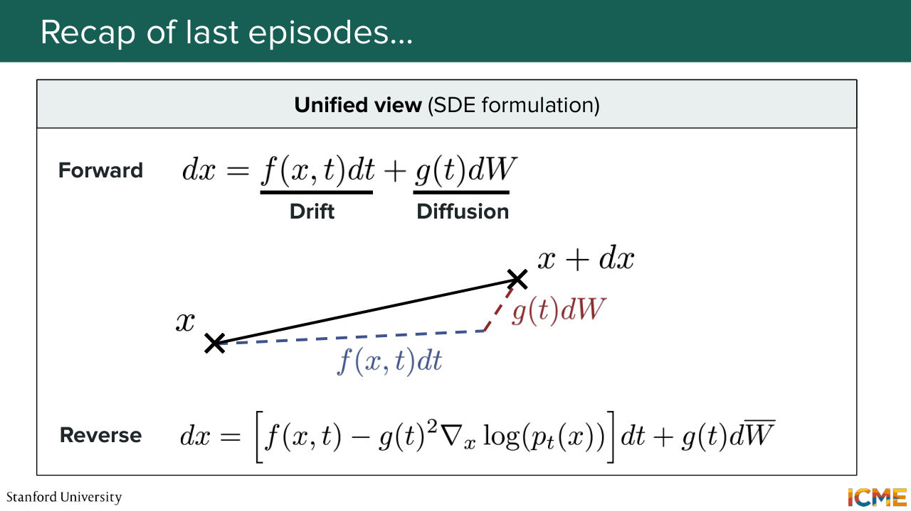
5:20 to a continuous one, and we obtained this SDE, which was of the form dx equal f of x and t dt plus gt times dw, where w is our Wiener process which is introducing the stochasticity. And in particular, the first term is called the drift term, and it is a term that quantifies the deterministic movement in space across time. And the second term is called the diffusion term,
5:53 which quantifies the amount of stochasticity that you have in your process. So this expression is the expression of the forward pass, meaning, you're actually noising your images. And we saw that in space, if we were to represent that, it meant, again, having a drift component and a diffusion component.
6:21 So now if we wanted to denoise our image, we were actually interested in the reverse process, which we saw thanks to the result from the '80s involved knowing the score. So this expression is the reverse process that allows us to denoise images, which is why we need to learn the score.
6:46 And this is where the score comes in, in the continuous view. So this was two weeks ago and a week ago. But today we're going to see this third generation paradigm,
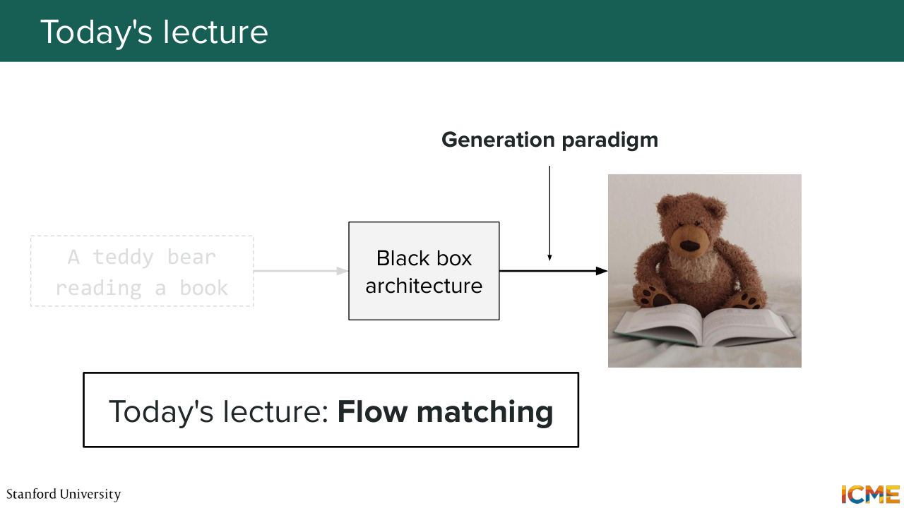
Shown briefly — discussed together with the adjacent slides.
Shown briefly — discussed together with the adjacent slides.
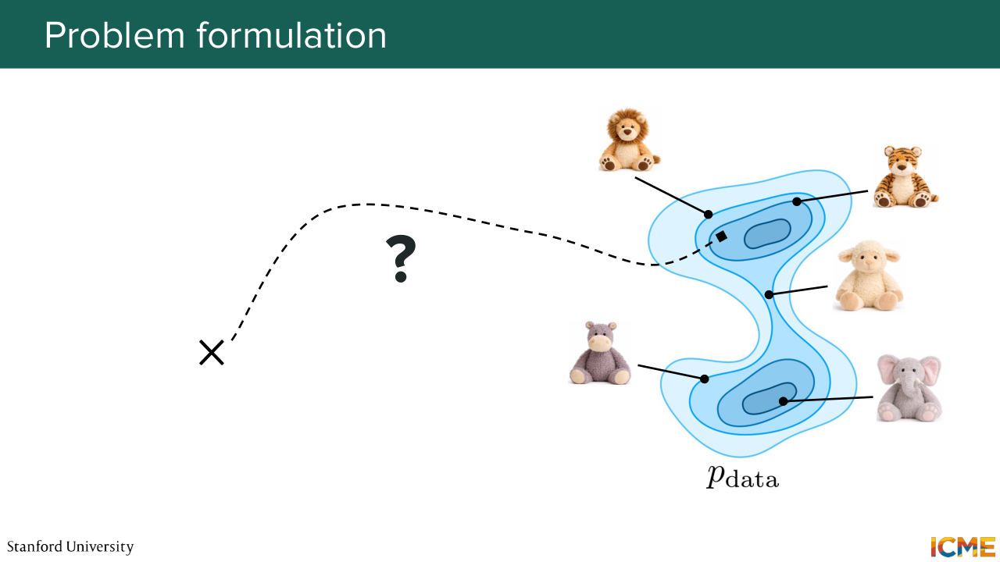
7:03 which is called flow matching. And similar to the past lectures, what we're going to try to do is to have a nice balance between intuition and math, because you will see that these papers are full of math, full of equations, and we will try to approach it from an intuitive perspective, but not shy away from the math either.
7:29 And of course, please interrupt me at any point if you feel there's something that's not clear. Cool? OK, let's start. So the whole point of these first three lectures is to find a way to go from somewhere that is easy to sample from up until our data distribution of interests. So the way that flow matching works is.
8:03 It has two distributions. The first one is called the initial distribution, which is the distribution that you're starting from. And then the second distribution is called the target distribution, and it is the distribution that you want to end up with. And the whole point of flow matching is finding a way to transport our initial data distribution up
8:33 until the target distribution. And just note the terminology I'm using, transport. So what we want is to transport the whole density that we have, and remember that probability, densities have this very nice property of summing to 1. So we want to transport the whole density distribution from one place to another.
9:02 So this is the idea behind flow matching. And we're going to see how we can do that. So I'm going to just give you a warning in terms of conventions. In the past, we've seen that 0 was clean data and then capital T was the noise data. But here it's going to be different. So we will be noting p0 our initial data distribution, which
9:32 is typically something that is easy to sample from such as Gaussian noise. And the target data distribution is going to be noted p1, t equal 1, and this is where we want to end up with. And then again, so this slide is just to say that lectures 1 and 2 we said 0 was clean, capital T was noise.
9:59 But here 0 will be noise and 1 will be what we want, which is the clean images, which is the data distribution. So the reason why we chose to proceed that way is just that the field chose these conventions. And if we were to keep the conventions of the diffusion and score matching fields, it would just completely confuse if you were to read papers from the flow matching
10:30 field, which is the reason why we're keeping things consistent with the paper. But just keep those things in mind, because sometimes these conventions can also be reversed, depending on which paper you're reading. But this one is by far the most common. So with that warning aside, what we want to do
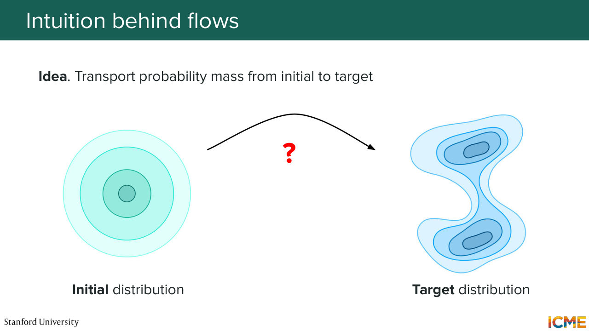
Shown briefly — discussed together with the adjacent slides.
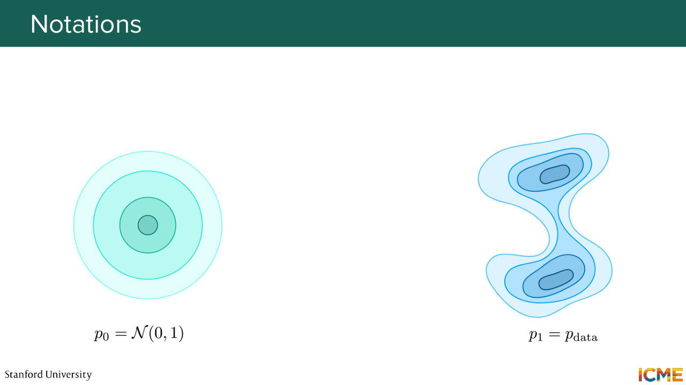
Shown briefly — discussed together with the adjacent slides.
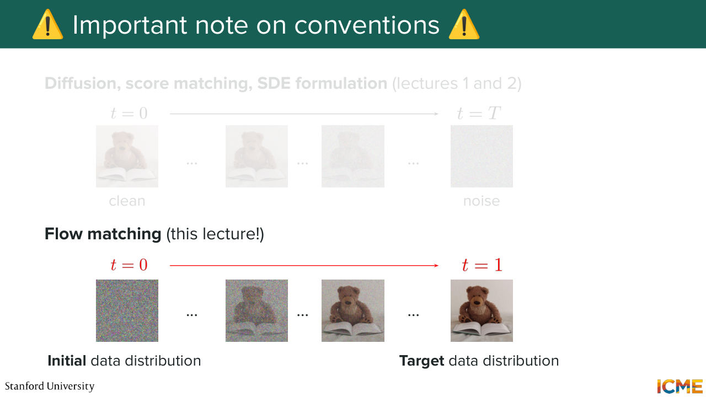
Shown briefly — discussed together with the adjacent slides.
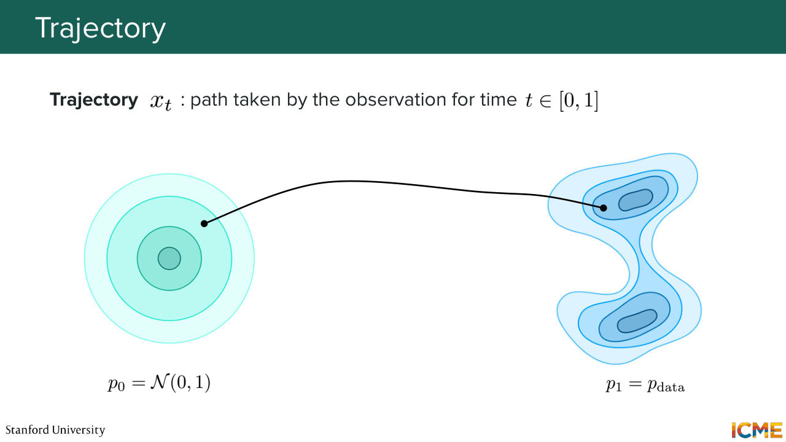
10:55 is to sample an observation from our initial data distribution and then map it to the target data distribution. So in order to do that, we're now going to go through some common notations. And the first one is called the trajectory. So the trajectory is notated xt, and it
11:21 is the path that is taken by an observation between times 0 and 1. So by the way, the time 0 and 1 is arbitrary. It's just a way for us to say, OK, when are we starting and when are we ending? And so here at time t equals 0, we have x0. And what we want to do is for our trajectory to map a point from p0 up until p1.
11:52 So that's our goal. So now, let's see another notation.
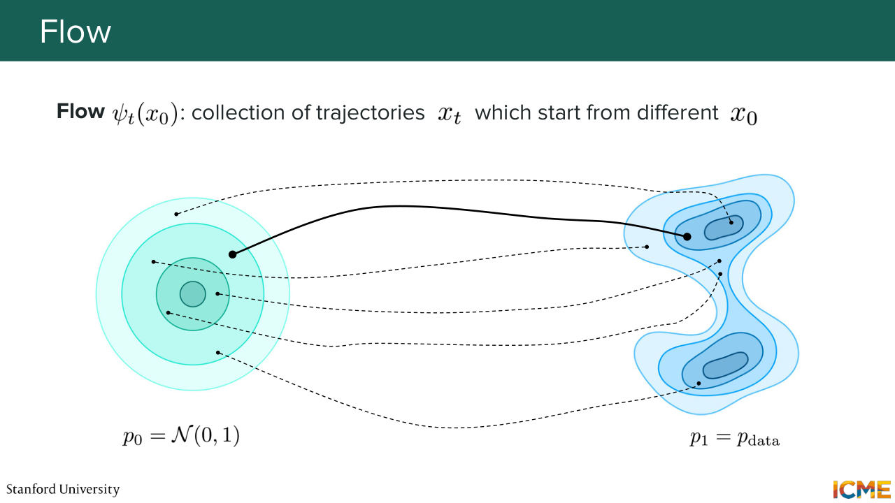
11:58 So this one is called the flow. The flow is known as psi of T of x0. So I'm just going to write that down here. So it is a function that takes time and an initial condition. And it gives you where that point at time t. So this is the time so belongs to 01. This one is to your space, which is maybe--
12:39 I don't know-- d dimensional. And this one is also in the d dimensional space. And you have psi of T of x0, which is equal to your point at time t, which is x of t. So the flow you can interpret it in different ways. So one way you can interpret it is it's
13:04 a collection of trajectories. Because if you change the initial condition x0, then psi t of x0 is all the possible trajectories that go from an initial condition x0 up until time t. Yeah? The flow can also be seen as a function that maps your initial condition to where it should be at time t.
13:37 And this is why it's called the flow. So this function is quite important because at the end of the day, what you want is psi 1 of x0 to be sampled from-- to be as if it was sampled from p1, which is your target distribution, data distribution.
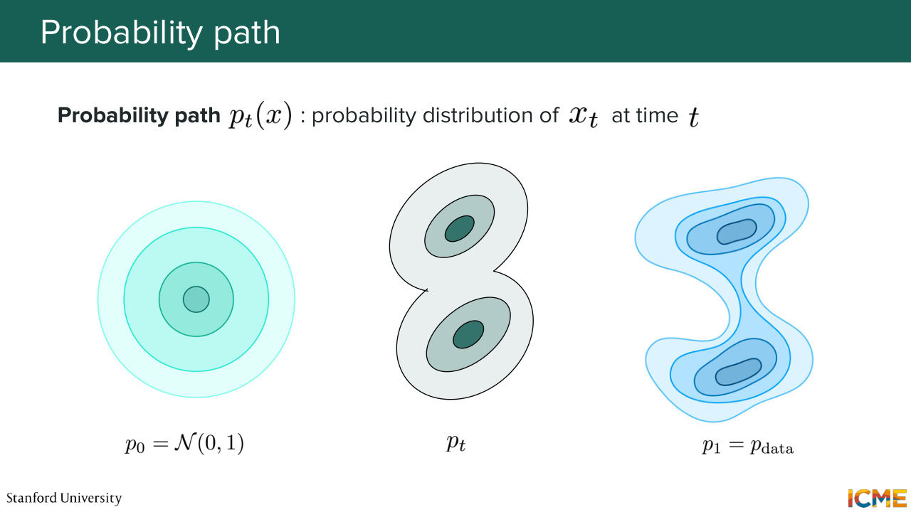
14:00 Cool. So now we have our next terminology which is called the probability path, and it's denoted pt of x. So pt of x is the probability distribution of your observations at time t. So p0 of x is your initial data distribution, and p1 of x is your target data distribution. So if t is between 0 and 1, it's basically
14:34 the intermediary probability data distribution. And as you can imagine, in order to go from p0 to p1, you have an infinite number of ways of going from one to the other. So pt by no means unique. There are many ways for you to go from 0 to 1.
15:02 Cool. And now we're going to talk about a central object
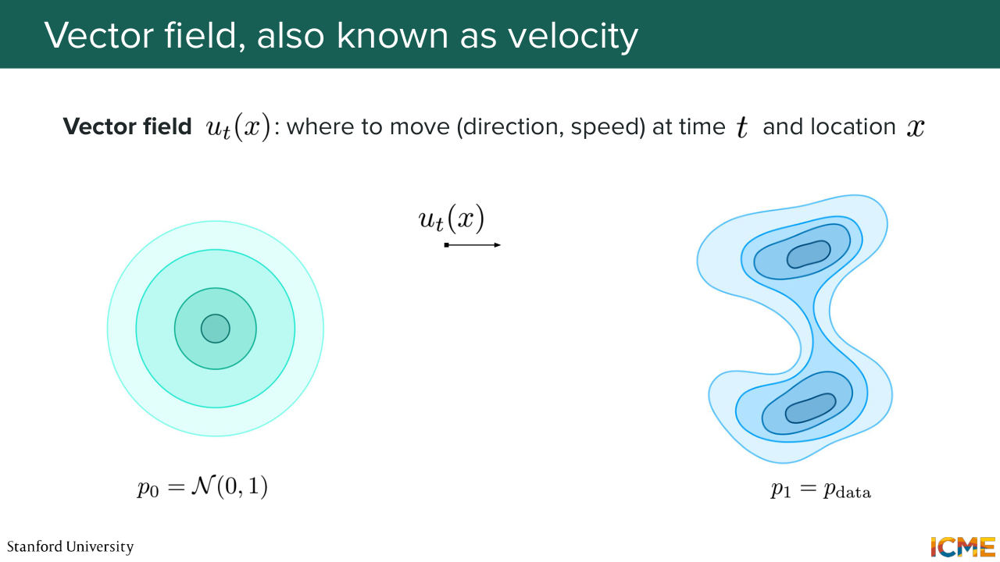
15:11 of this whole field, and it's called the vector field. So vector field is noted ut of x. And it is a function that takes in a place in space, so x, and a time t. And it gives you a vector. And that vector, you can interpret it as the direction and the speed that particles should move
15:41 at that location at that time. So again, the vector field takes in a vector, which is your position in space and gives you also a vector, which is where you need to move and how fast. And we're going to see that the vector field is quite central to flow matching.
16:06 But before we do that, I know last lecture, we talked about the score. And the score was also a vector. And if you remember, the score was also something we used in order to go from noise to data. So one natural question you may be asking yourself right now is, well, how does this vector field or velocity relate
16:36 to the score? So I'm going to give you the following analogy. So let's suppose you want to go from your initial distribution to your target distribution. And let's suppose that you're thinking of this in terms of self-driving cars that are distributed, let's say, in a Gaussian fashion in the middle of the desert. And what you want to do is to position your self-driving cars
17:06 in a certain way so that it follows, let's say, a target data distribution. So the way you would think of the velocity would be instructions that you would give to your self-driving cars at a given location and at a given time t So if the vector field was not time
17:30 dependent, you could even think of it as highways or routes with speed limits. But here, the vector field is actually time dependent, which means that at a given location x and at two different time steps, t1 and t2, that vector can actually be different.
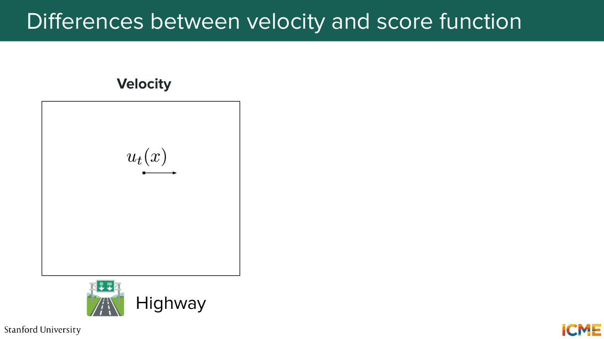
17:51 And in that sense, just following with that self-driving car example,
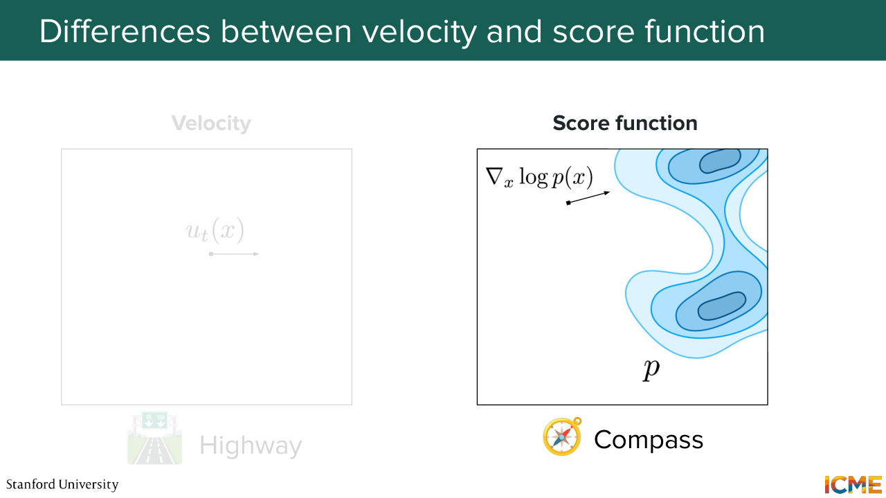
17:57 the score would be a bit like a compass that you could see in your car of where high density regions are. So I hope this is useful to just picture the difference between what a velocity is and what a score is. So these two are vectors, but they have different interpretations.
18:24 Any questions so far? We've barely started, so we're going to see a few things here. But I just want to make sure that the notation so far are clear. Yeah, all good? Cool. So we're going to see our first identity here.
18:46 So we introduced the vector field, a.k.a. the velocity, because this is the way we're going to have our particles move from one place to another. And in particular, the definition
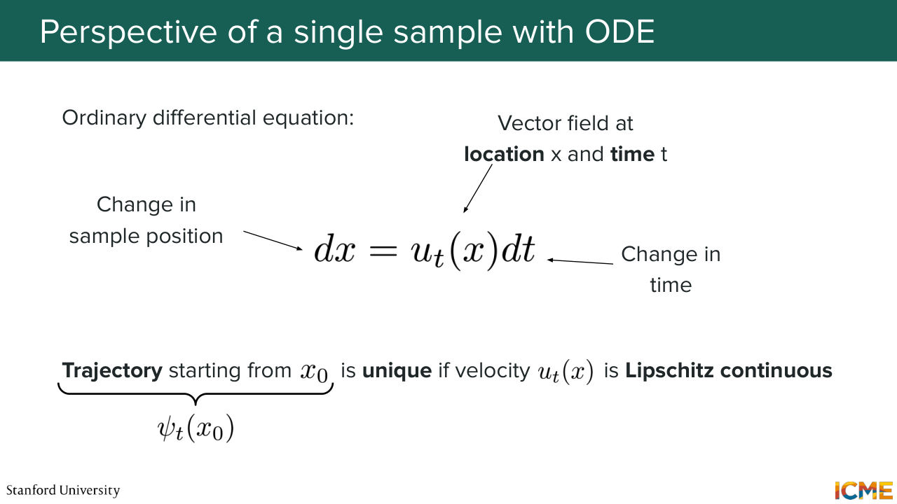
19:04 we're giving to the velocity, a.k.a. the vector field, is given as follows. So what we're going to say is that a change in position will be associated with the velocity at that location at that time t times dt. So in other words, a given particle in a given location will be moving according to that velocity.
19:33 And one thing that I want to tell you is that the trajectory, which as a reminder, is the whole path that the particle is taking from time t equals 0 to time t equal to 1, that trajectory is actually going to be unique for a given initial condition
19:59 if there is a special condition on the vector field, which is that if the vector field is Lipschitz continuous. So the reason why I'm bringing this up is because it's going to be important. And so who knows what Lipschitz continuity is? Have you ever heard of this term? Yeah? No? OK, so maybe I can just recap the mathematical definition
20:27 and maybe how it means-- what it means. So Lipschitz continuity of a function f is when you have some constants, let's call it m such that for all x and y in your space of interest, you have your function f that satisfies this relationship.
21:01 So the norm of f of x minus f of y is less than or equal than m times the norm of x minus y. So what this means is that f needs to be continuous, but also not in a very dramatic way. So this is the mathematical definition of Lipschitz continuity. And what I'm saying here is if the vector field
21:30 is Lipschitz continuous, then the trajectories x will be unique for a given initial condition. And so I'm going to just give you an example of when trajectories are not unique. So here we have our ODE which is here like so.
22:04 So I'm just going to give you an example of if we have a vector field that is not Lipschitz continuous, how we can have trajectories that start from the same point but that are actually different. So here, the example is as follows. So let's suppose we have your vector field, which is given this, by, let's say, square root of x.
22:30 And you only consider, by the way, x positive or 0.
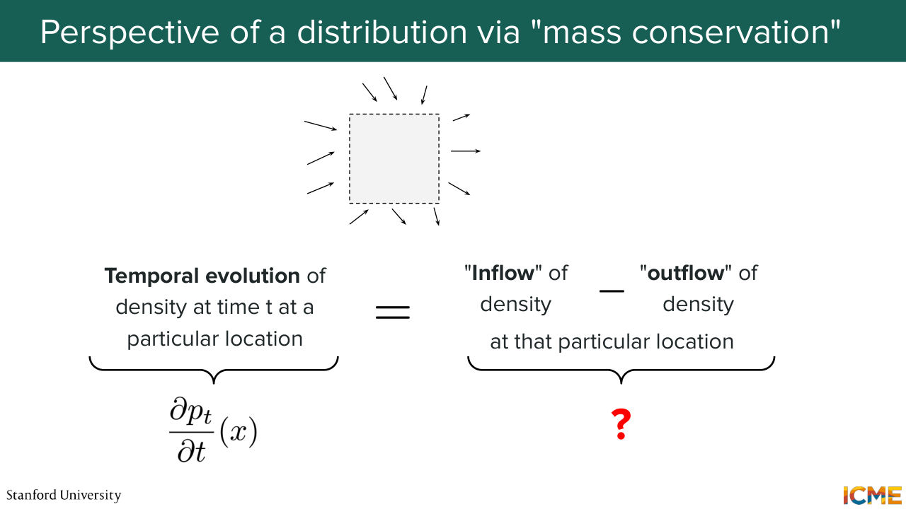
22:36 So if your vector field, by the way, is time independent and it's just a function of x by square root of x, then
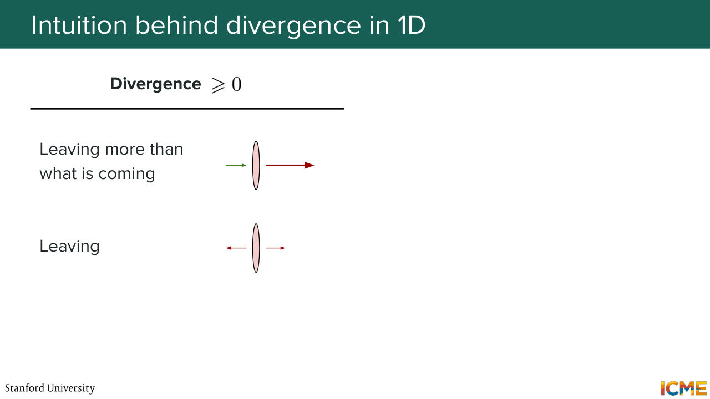
22:47 if you say you want your initial condition to be x0 is equal to 0, then xt equal to 0 is going to be a solution,
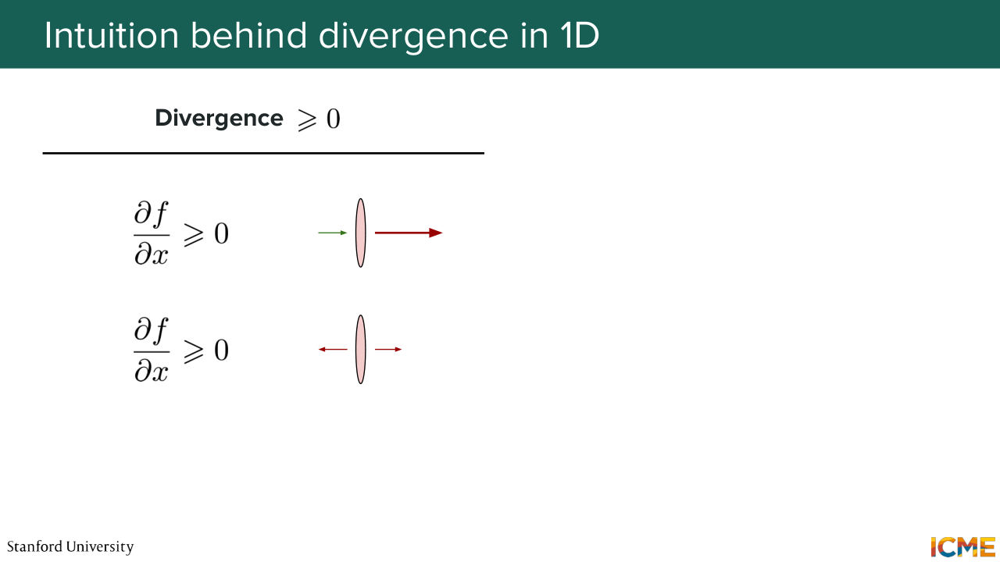
23:05 but xt equals to t squared over 4
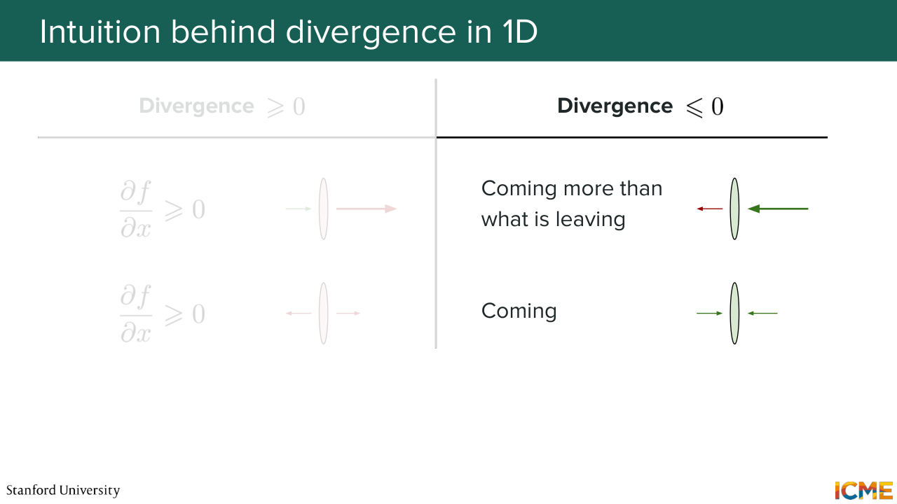
23:13 is also going to be a solution. So here t squared over 4.
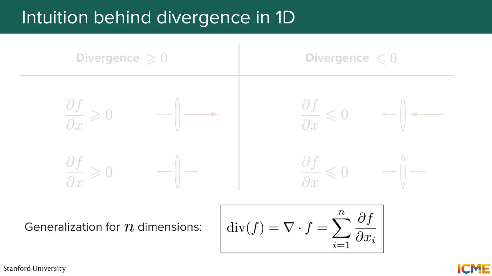
23:18 So the derivative is t over 2. And here's when you put this also in the square root,
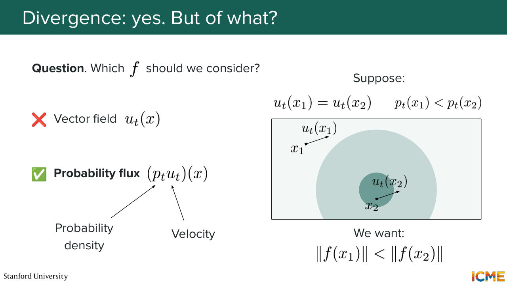
23:26 it's also t over 2. So all of that to say that your vector field needs
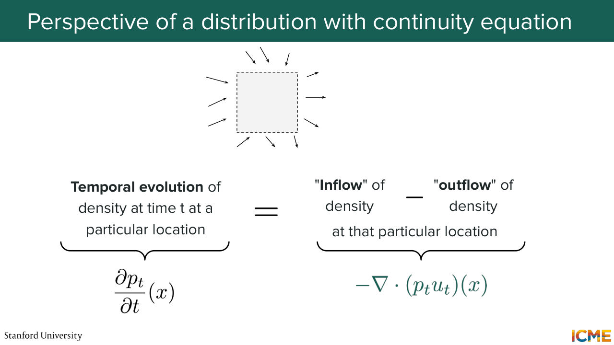
23:35 to behave in a certain way if you want to guarantee that your trajectories are unique. And this is Lipschitz continuity. And you're going to see why that matters. Cool. So that's the first equation that's going to be important.
23:54 So the ODE here, which is dx over dt is equal to the velocity at location x and time t. It's the first one. The second one that we're going to see is the following. So I told you that what we want to do is transport our distribution from one place to another. So when you transport something, one thing that you want to guarantee is that you're not
24:26 going to lose or gain anything of what you're transporting. You have what we call conservation of mass. And this idea is also something we want to put in writing. And in particular, we're going to focus on the following case. So let's assume you're in a region of space and you consider a very small area.
24:55 And here you have your data distribution that is around it. So the equation that we want to put in writing is around making sure that the evolution of your density at time t is equal to the density that is coming minus the density that is going out or that is leaving.
25:26 Do you all agree with this idea? So the evolution of density as at time t is a function of how much density comes in minus how many comes out. So the left-hand side is kind of easy. It's just a partial derivative of your probability path at that region with respect to time.
25:54 But then the right side, I don't about you, but very intuitively, there's not like a supernatural operator that does that. So what we're going to see now is how we can quantify the idea on the right side of the equal sign. But before we do that, I just want to take a pause.
26:19 Does this idea make sense, conservation of mass? By the way, have you seen it in another topic? Yeah? So in physics, you have the same thing, and it's actually called-- it has a name. It's called the continuity equation. Anyways, so instead of just giving you the formula, we're just going to intuitively get to it. And in particular, I want us to think about this right-hand side
26:52 of this equation and think for a bit how we want to quantify the inflow minus outflow bit. So let's suppose you have an operator that's called of the divergence. But right now, I'm not telling you anything about what that operator is. I'm just telling you that the operator is positive
27:20 when things are coming out more than coming in. And we're going to see what happens then. So here, when we're talking about coming in and coming out, we're, of course, talking about vectors. So here we're assuming, for instance, if there's more coming out than coming in that-- let's assume if we are in one dimensional space,
27:53 you have a vector that is such that at first it's small in magnitude, and then it's much bigger in magnitude. So here, do you agree with me that whatever this vector is representing, there is more coming out than coming in? You all agree? OK, so that's one case where coming out can be more than coming in.
28:20 So let's see a second case. So second case is here. And then let's say your vector is coming out here and coming out there. Yeah? I'm sure you can have more cases than that. But in this 1D example, if you were to represent your vector, let's say f, over the dimension x, here,
28:52 what is the magnitude of f doing? It is increasing. OK, so here, we just see that partial derivative of x/x is increasing. How about here? So here it's negative. And then it becomes positive. Also increasing, right?
29:16 OK, so based on this very back-of-the-envelope intuition, we see that when things are leaving, partial derivative of x over this dimension of f over this dimension x is positive, which seems to match the sign that we want from our divergence operation.
29:45 So now let's see the other case. So let's assume that we have now the case where we want our operator to be negative when there is, quote unquote, "more coming than leaving." So here again, this example. So you have, let's say, a bigger vector here coming and then a smaller one leaving. And then let's say you have another case, which
30:15 is given by this, which is just vectors pointing towards that area. So here you see that f is becoming more and more negative when you project it on x. So here you have partial derivative of f over x, which is negative. And here you see that it was first positive,
30:44 and then it becomes negative, which again, boils down to this. So this is by no means a formal proof, but I hope I gave you some intuition that if you take the partial derivative of your function that is outputting a vector over its coordinates, at least in 1D,
31:15 it would give you this intuition that if it's positive, then it's more coming out, and when it's negative, then there's more coming in. So based on this intuition, what I'm now telling you is that there is an operator that is indeed called the divergence that is a function of a vector, that is a function of x, which is also multidimensional.
31:44 And what it is doing is it is just the sum of the partial derivatives of x over each dimension. So the divergence is a scalar. It's a number. And if it's positive, it just means that there are more things coming out. And if it's negative, it means there are more things coming in. So based on that, we want to see how we can use this divergence
32:16 operator back into our continuity equation example, where we want to quantify the fact that we want the net inflows, which is how much density is coming in versus out. So now a second question is something that we ask ourselves, which is OK, what should we use as f? What should f be?
32:47 So we saw the vector field, which is a vector that could be a candidate. So do you think the vector field could be a good candidate? So let's see with an example. So let's suppose you have two points in space, let's say x1 and x2. And then you have their respective vector fields.
33:10 If you happen to have a higher density in one of the two points, then our intuition tells us that you would want the point in the higher density region to transport more things than the one in the lower density region. So in that case, the vector field alone would actually not be a good candidate. Instead, and maybe you have guessed it, in order
33:41 to quantify the movement of density, we, of course, need to take into consideration the probability density. And so here the actual quantity that we will use is called the probability flux, and it is defined by dt, which is a scalar times ut, which is the vector field.
34:10 So going back to the equation that we wanted to put in writing, what we're saying is that the temporal evolution of the density at time t, which we said is simply the partial derivative of p with respect to t. We're now saying that this is equal to minus the divergence
34:36 of the probability flux. And this quantity, so minus divergence of dt ut of x. It just means that we're interested in the net inflows of density within our small volume. So all in all, that equation, which I'm going to write,
35:03 is nothing else than the continuity equation, which you may have seen in physics. 35:16 So I'm going to write it down. And of course, OK, this is here. So what we're saying is that the evolution of density at a given location, the temporal evolution of the density at a given location, is given by how much density is coming in minus
35:46 how much density is coming out. And this just conveys the facts that we're not creating new density out of thin air, we're just conserving it when time goes from t0 to 1. And compared to the ODE that we saw before, you can think of this equation as being a macro perspective of how your probability path evolves.
36:24 And the ODE itself is actually centered on how one particle evolves, which is more a micro perspective, which we're going to see here. So a single sample, you take your sample x at time t.
36:40 And what you're saying is that how fast that particle is going is actually given by the vector field at that location at that time. So the distance dx is given by ut of x times dt. So this is the micro perspective. But we also saw that this vector field that
37:06 was coming into the picture in this micro perspective is also in the macro perspective. And what we're saying is given that we're transporting the density and we're not losing it or gaining it, we also have this nice identity that we can use, which is also called the continuity equation. And so there is expression that you will see a lot in papers.
37:36 I'm going to read it out loud. The vector field ut of x generates the probability path. So when people say that, what they mean is that ut and dt satisfy the continuity equation. So now you may wonder, well, why should we care? So just remember that our goal is
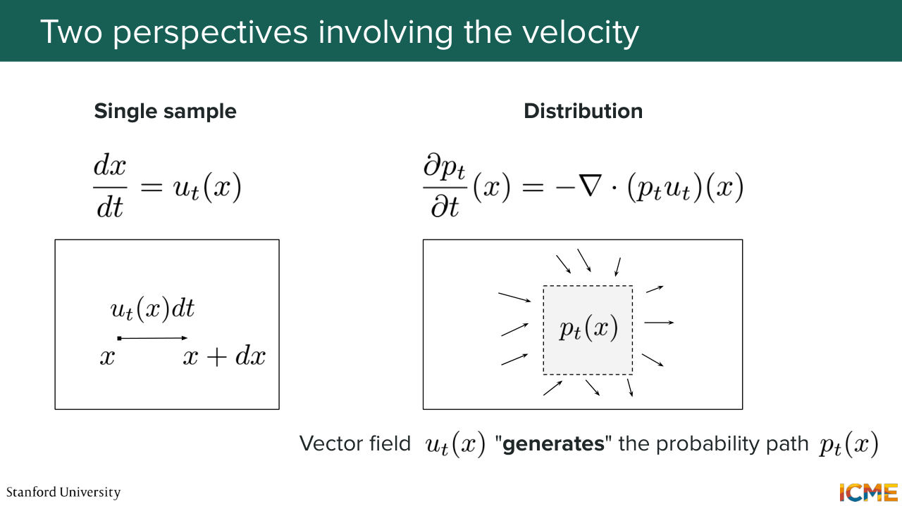
38:04 to sample an observation from the initial distribution p0, and to map it to the target data distribution. And the way we want to map it is we want that particle to go from one place to another using the vector field. And so what we want is to find a probability path that will
38:30 allow us to go from p0 to p1. And in order to find the probability path, we also need to find the associated vector field that will allow us to actually do the mapping because that vector field is in the single sample perspective. So that's the idea. We're going to see it in other words, in a little bit. But this is the intuition behind flow models.
39:03 Any questions on this? Everything is clear so far? Yep. So question is the solution of this equation would be the target. So on the left-hand side, if we know ut and if we know that ut is allowing pt to go from p0,
39:31 something that we decide that is easy to sample to p1, what we care about, what we're saying is if we know such a ut, then on the left-hand side, if you sample x from p0, you have your initial condition. And if you ut, what that means is you can solve this equation in order to find x1.
40:00 And x1, by definition, will be as if it was sample from p1. So that's the idea. I know it was a lot. I know it may not seem clear, but don't worry, we have a lot of examples down the line. So let's move on. Oh, this is exactly my next slide actually. So here what we're saying is the relationship between these two
40:26 perspectives, I'm going to just repeat what I said but in mathematical terms, is if we sample x0 from p0. Given that our particle x is subject to velocity, then what that means is, if that velocity is actually generating the probability path from the initial to the target one, then what that means is that xt will be sampled from dt.
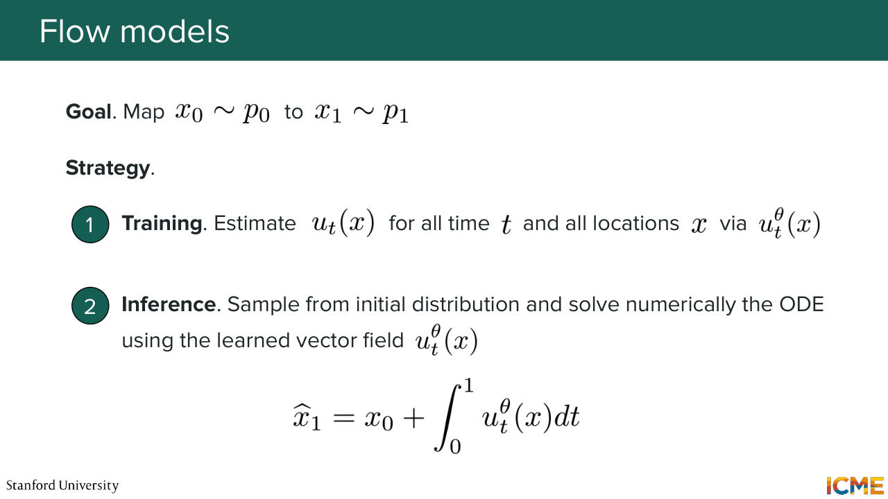
41:02 And in particular, t=1, x1 will be sampled from p1. OK, cool. So don't worry. We're going to go into more details on this. So the whole goal of flow models is to map points, is to map x0
41:25 to x1. So what is our strategy here? We saw that the vector field was a central piece of this whole problem. So number one, step number one is for us to estimate this vector field via some model that we're going to note ut theta of x. So theta is the parameters that we're learning. So if we learn such a vector field, then what we're going to do in order to map x0 to x1
42:02 is we're going to use the ODE and solve it numerically. So what does that mean? That means that we're going to sample x0, and we're just going to follow the vector field up until time equal to 1. So this integral here in practice is going to be just a numerical solver that maybe Euler,
42:27 for instance. And it's going to be giving you x1, which is what you want, because at the end of the day, you want to be able to sample from your target data distribution. So starting from now, our full focus will be around finding the vector field ut theta of x.
42:52 Because right now, I just told you what we care about. But I didn't tell you how we're going to do that. So now we're going to focus on that. So in the past, there has been many papers
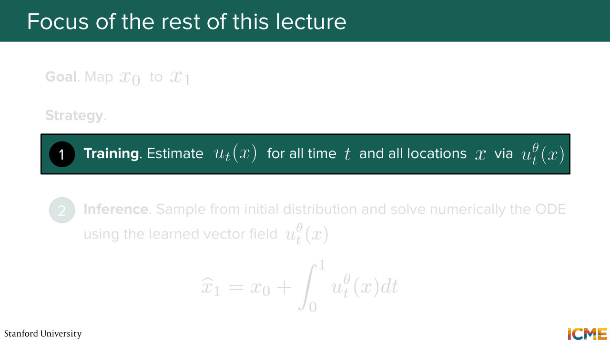
43:06 published on how you can estimate your vector field. And there is one method that I'm going to mention here, which is not going to be the focus of this class because it is a method that was used a number of years ago. So eight years ago, I believe.
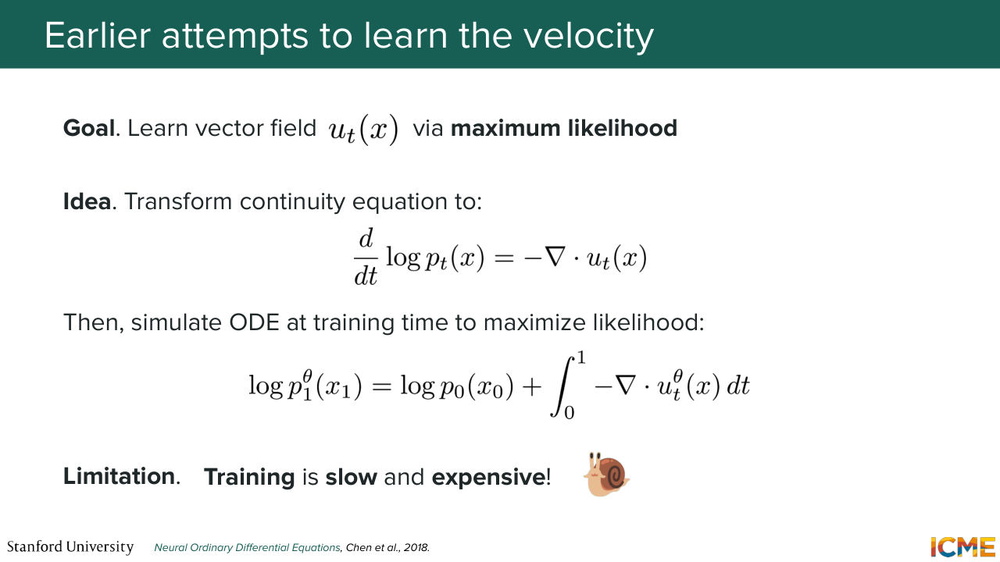
43:26 But it is not something that could be used in practice. So people are not using it so far. But I'm just telling you just for historical purposes. So one way of learning the vector fields is by maximizing the likelihood that your model is seeing the data, the training set. So how can you do that? Well, if you take the continuity equation that we saw, so this one-- so if you take this equation, then what happens
44:03 is if you do some math, you can actually pop up that log of dt of x, which is what you want to maximize. And you can have the following strategy. So you want to determine log of p1 of x1. So x1 is the data from the training set. So you want to compute the probability of your model
44:34 seeing x1. The problem is you don't how to compute it. So the way you're going to do this is you're first going to realize that you can compute the probability that the initial distribution is seeing x0, because typically, the initial distribution is an easy one, something that you can analytically compute, such as a Gaussian.
45:00 So you know how to compute log p0 of x0. And what you're going to do is you're going to link x1 and x0 by integrating the divergence of the vector fields, because you have-- the formula above that is true. So if you know log p0 of x0 and if you know the vector field, then you can compute this quantity. And so what that paper was doing, which is called continuous normalizing flow,
45:31 was that it was us trying to learn the parameters theta by maximizing the likelihood of your training sets happening under theta. And it was computing the likelihood using this formula. So what is the problem? The problem is that at training time, you need to constantly solve this integral. So it's a numerical solver that works all the time.
46:03 So it's very expensive and very slow, which is why we have a snail emoji.
46:09 So it's just not practical. People just couldn't use that.
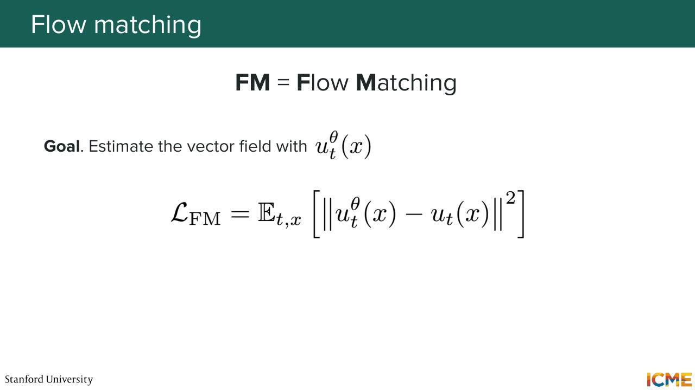
46:16 And for that reason, I hope I did a good job of motivating the reason why we needed another approach. The approach we're going to see now is actually what is called flow matching, because we're going to see we're not doing maximum likelihood estimation. We're instead trying to directly learn the vector field.
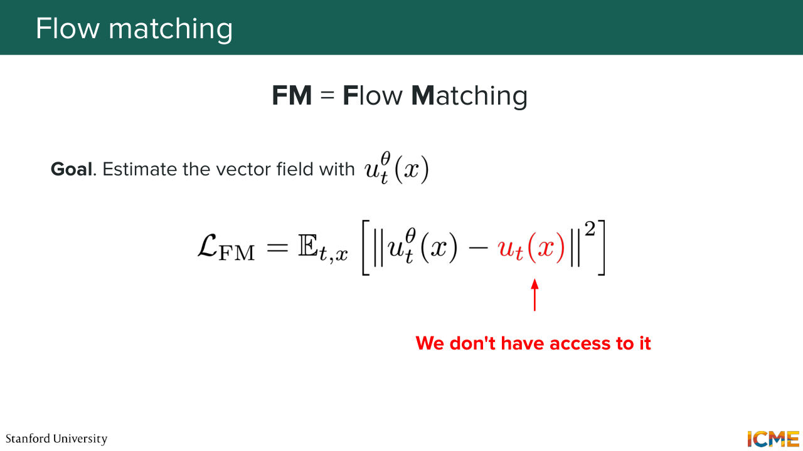
46:43 So if you remember for score matching, you were directly trying to learn the score. So here we're directly trying to learn the vector field. But the problem is that you don't know what it is. So we're going to see how we can compute this loss and indeed optimize on theta in order to find our vector field.
47:12 So just remember that the problem that we have is we have an initial data distribution and a target data distribution. And what we care about is finding this ut of x, which will allow us to go from p0 to p1. That is our goal. Well, p0 is easy, so it's a Gaussian typically.
47:38 But then p1 can be super complicated. So one idea we can have is what if we just remember that the target data distribution is just composed of points from your training data? So it's like individual points. So what if instead we simplify our problem
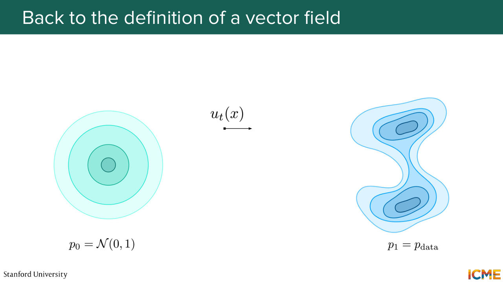
Shown briefly — discussed together with the adjacent slides.
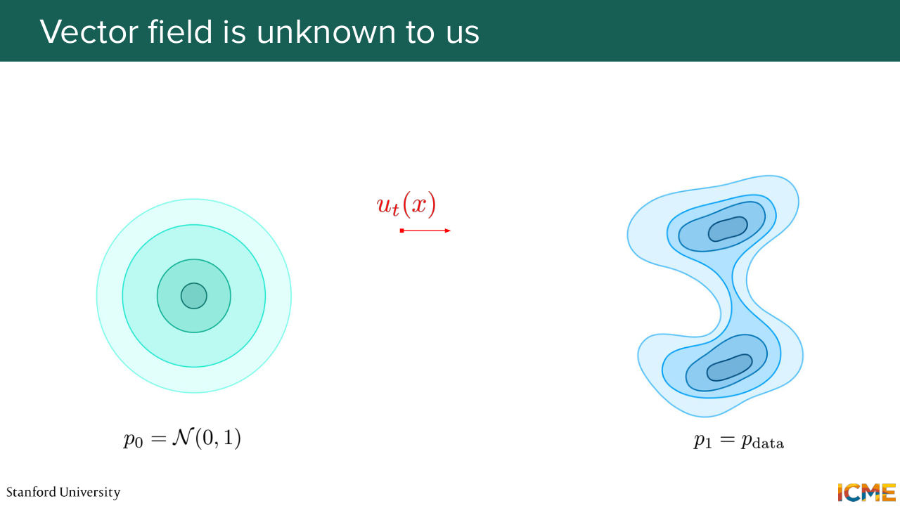
Shown briefly — discussed together with the adjacent slides.
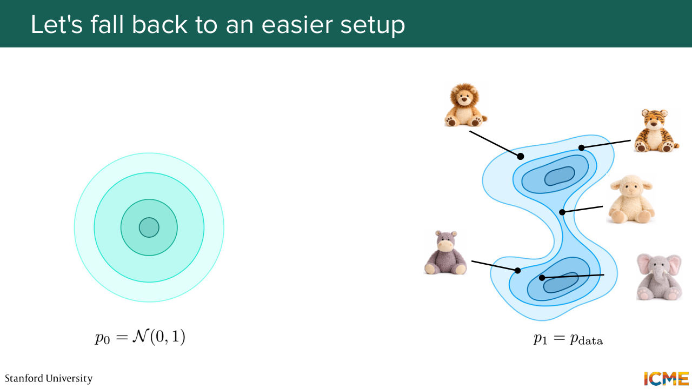
Shown briefly — discussed together with the adjacent slides.
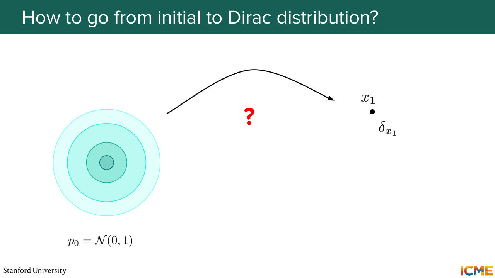
48:03 and we ask ourselves how we can transport the initial data distribution, not to the target one, but to a single point? How about if we just move our whole data distribution from initial to a single point? And here, I noted the single point with the distribution delta x1. So delta x1 is the notation for a Dirac delta distribution.
48:33 So who has heard of the Dirac distribution? Yeah? So Dirac distribution is actually probably the simplest distribution out there because it's a deterministic distribution. It will always give you one quantity.
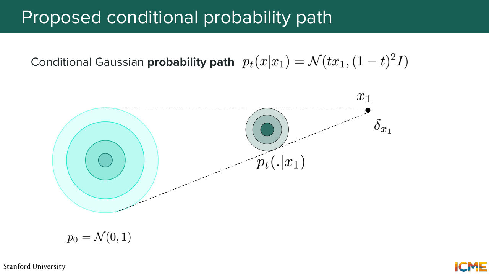
48:47 So here delta-- so I'm going to write it down. So delta x1 of x is going to be 0 if x is different than x1. And otherwise, it will be actually a very high number. So typically, people say, let's say infinity. But of course, it's infinity, but the integral of this distribution, like the density needs to be 1.
49:21 So long story short is that we simplified our problem from initial data distribution to your target one. So we changed from that formulation to initial data distribution to a single point. So one idea could be for us to think of the following way
49:49 of going from one to the other. So let's suppose you have a probability path that is super simple. It's just a Gaussian distribution that is being interpolated between 0 and x1. So here what I'm saying is, how about we think of the way we want to go from 0 to the points by taking our normal distribution of mean 0
50:25 and variance identity? And how about we just scale it down, scale it down and then move it towards x1 until it becomes just that point? So here pt-- so we say x given x1, because it's a conditional probability, it's like given we're arriving at x1 at time t equal 1, it will be given by a mean of t x1
50:56 and a variance of 1 minus t squared times identity. So let me tell you why that is the case. So what I'm saying here is that I'm proposing a way for us to go from the normal distribution that
51:29 is this one of mean 0 and then variance the identity. So what I'm saying is in order to go from here to this point, which is x1, what I'm telling you is we're going to have a path pt given x1, which is a normal distribution of-- as a function of t because it's probability path at time t, t x1 and 1 minus t squared I. So when t equals 0, this is 0, this is identity.
52:12 So p0 is just the normal distribution of 0 and I. And p1 is-- well, t=1 is just x1. And this one is a variance of 0. So you can think of t just tending to 0. So p1 is just a Dirac distribution. So this probability path that I'm telling you
52:43 is something that is letting us go from our initial data distribution to this point. So it's a valid one. So why am I choosing this? Well it can be shown that one vector field that is generating this probability path has the following expression. So ut of x given x1 is x1 minus x over 1 minus t.
53:12 So I'm just giving you the formula so you can derive it. So I'm looking at the time, we will not have time. But the reason why I proposed the probability path, the conditional probability path is because it's much easier for us to compute a vector field,
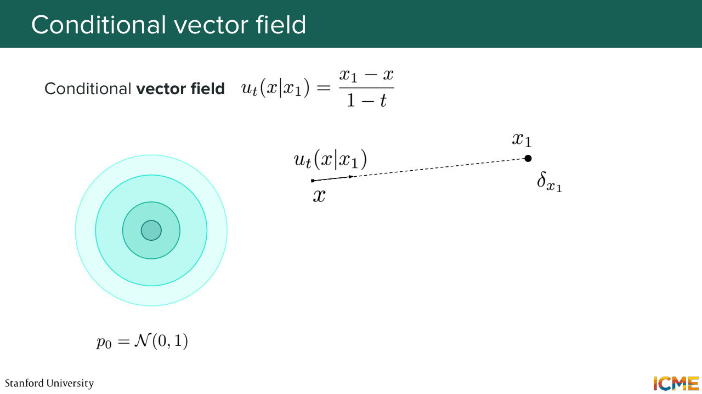
Shown briefly — discussed together with the adjacent slides.
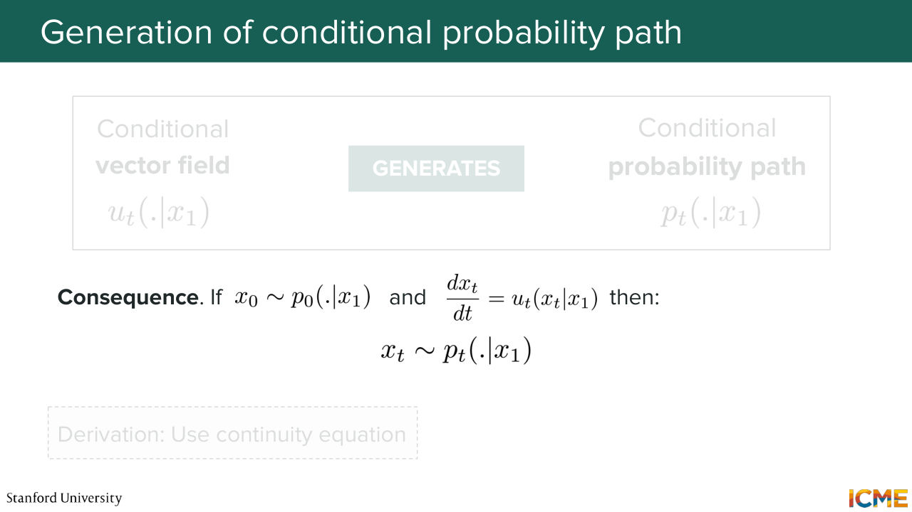
53:31 and it's something that we can actually write. And it is this one. And what I'm going to tell you is that this vector field is generating the conditional probability path. So in other words, the vector field will be such that if you sample from p0 of this conditional probability path,
53:57 and if you follow these conditional vector fields, what I am telling you is that you will end up at time equal t with xt following your conditional probability path. Well, that's a huge step forward, no? So how do you prove that, by the way? So you just use the quantities, you use the vector field that
54:26 is just this formula, and you use the conditional probability paths which you can analytically derive. Because, if you remember the Gaussian distribution, we just know everything about it. We also know the density formula. So if you take both formula and if you use the continuity equation, which is here, you can show that this expression is true.
55:00 And this is how you prove that. Now we're not going to do it because this is just some math. But maybe one thing I will tell you is why that vector fields makes sense. So we said that-- we said that the conditional vector field, which
55:29 is noted ut of x given x1, what we said was that this was equal to x1 minus x over 1 minus t. Well, when t is approaching 1, and when your x is not near x1, then what you're seeing is that this quantity goes crazy, goes very close to infinity. It goes very, very high. Well, why does that make sense? It's because at time t equal 1, your distribution is literally
56:05 a deterministic distribution that is x1. So you want all your particles to be exactly at x1. So if you're not at x1, then you better hurry. Your velocity will be very, very high. So that's one thing I want to say. And one other thing I want to say is there is a very nice expression
56:32 of the conditional vector fields if xt is drawn from that conditional probability path, which as a reminder, is a normal distribution of mean t x1 and 1 minus t squared I. So if xt is drawn from such a conditional probability
56:58 path, that means that you can express xt as follows. So t x1 plus 1 minus t x0, with x0 drawn from a normal distribution. So what that means is ut of xt, given x1,
57:29 if I were to just replace xt in this formula, what I would obtain is x1 minus-- so x, I'm just going to directly replace just because I don't have space. So t x1 plus 1 minus t x0 over 1 minus t. So x1 minus t x1 is 1 minus t times x1 minus 1 minus t
58:06 times x0 over 1 minus t. So what that means this is equal to x1 minus x0. The conditional vector field for xt, which is drawn from a conditional probability path, is nothing else than x1 minus x0, which is very nice. So why is it very nice? Well, it's tractable and it's going to be useful for us.
58:45 OK, any questions? Yeah? So the question is, how do we get to that equation? So the question is, where does this equation come from? So this one, the one above is just an equation that I'm just telling you, I'm just giving you.
59:12 And you can verify that it actually is generating the conditional probability path. You can prove it, but we're not doing it. So given that this part is just me telling you that this expression can be even further simplified if the x that you're putting here is actually drawn from the conditional probability path. So as a reminder, the conditional probability path
59:42 is given by a normal distribution of mean t x1 and 1 minus t squared I. So if you were to draw from such a distribution. It would be the same thing because you x1. It would be the same thing as sampling from just a standard normal Gaussian and writing xt as follows, because this is your variance,
1:00:14 this is the mean. So this is the mean plus the variance times something that is run from the normal distribution. And so what I'm telling you is if you were to plug in that expression in here, then a lot of simplifications occur. And you end up with a very simple expression
1:00:37 of the conditional vector field at that point being equal to just x1 minus x0, where x0 is basically this component of xt. And follow up question is, well, why are you telling me this? It's a very fair question. I'm going to tell you in 15 minutes. But does everyone agree with me so far?
1:01:07 I'm going to take that as a yes. OK, so now that we looked at a very simple case of transporting
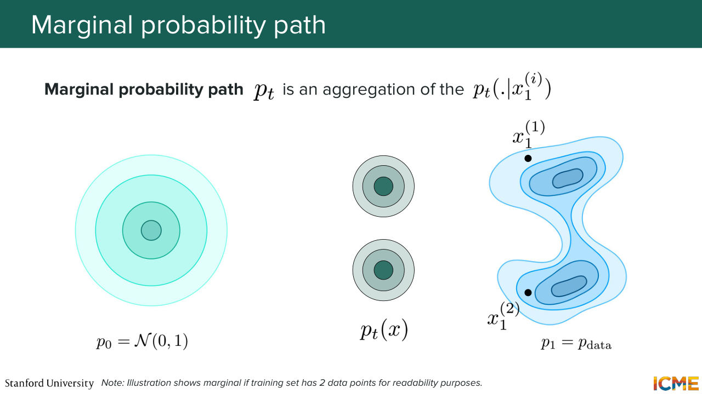
1:01:18 our data distribution from this initial one to a single point,
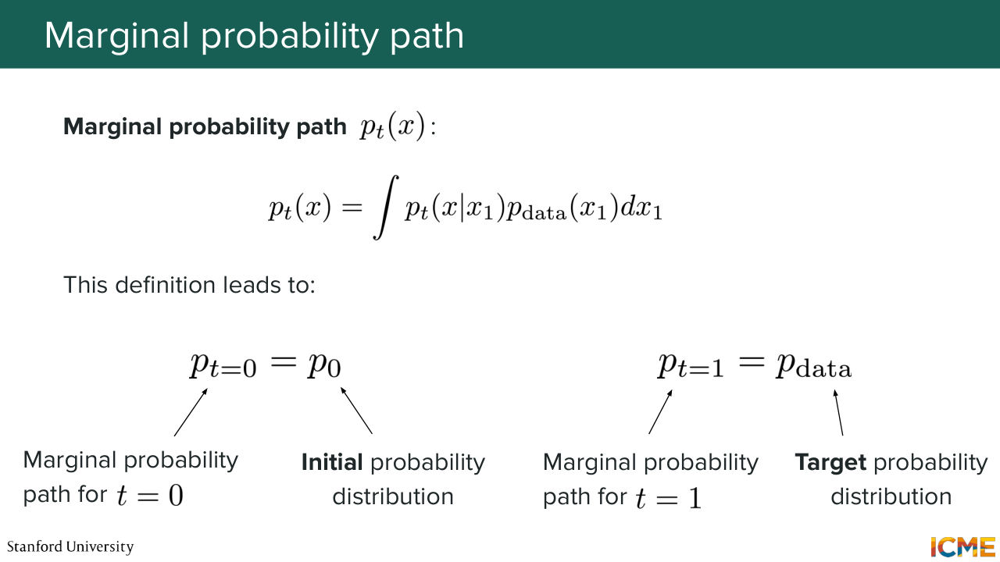
1:01:23 now our goal is going to figure out how we can map that back to our initial problem. So our initial problem is to map from the initial data distribution to the target data distribution. So an idea to obtain the target data distribution is to replicate this conditional path over all points of your target data distribution.
1:01:57 So if we do that, we consider, let's say, one point of your target data distribution, we have this conditional probability path. We consider a second point. And let's assume here that our target data distribution, our training set only has two points. Then what that means is that at time t,
1:02:21 we can consider what we call a marginal probability path. So marginal because we marginalize across the x1's. And we will end up with a mixture of Gaussians, where each Gaussian is interpolating between the normal one to the single point. So let me tell you why I'm telling you all of this.
1:02:49 So just remember that what we care about is to map our initial distribution to the target one. So there are many ways to go from one to the other. And what we say is that we can just propose this marginal probability path, which I'm
1:03:16 going to explain in a second. So what I'm telling you is let's fix x1. And just consider the conditional probability path. So p of x given x1 which is what we saw. Before Now let's consider all such conditional probability
1:03:42 path across all the x1's that are composing our target data distribution. And let's consider the following expression, which is a natural way of defining it. So we notice that p0 of x--
1:04:06 so p0 of x, given x1 is just the standard normal distribution, p0. So this is indeed the initial data distribution. So the standard Gaussian. And p1, what is p1? So we said that when t equals 1, p of x given x1 is the Dirac.
1:04:41 So when t equal 1, this one is equal to Dirac of x1 at x. So this whole thing simplifies to P data of x. So this marginal probability path is verifying p0, like t equals 0,
1:05:12 is equal to your initial data distribution. And p1 is your target data distribution. So it is a valid path to go from 0 to 1. So now our goal-- because just remember, what we want is to go from 0 to 1. And we want to learn the vector field that
1:05:34 is getting us from 0 to 1. So the good thing here is we have a probability path that is getting us from 0 to 1. So now let's look at the vector field. Let's see if there is a way for us to aggregate the conditional vector fields such that it is going to enable us to go from 0 to 1.
1:05:59 So here we consider the conditional vector field for each data point like conditional on each data point. So this one and this one. And what we want is to also have a marginal vector field, something that is able to generate the marginal probability path. And what I'm going to tell you is that the way we want to aggregate the vector field
1:06:30 is going to actually be quite intuitive. So I'm going to just write it down. So up until now, what we're doing is we're constructing things. We're constructing things, and then we're verifying that it's actually something that is what we want. So what I'm saying is we're going to aggregate the conditional vector fields by considering
1:06:57 the following aggregation. So I'm going to take my conditional vector fields. I'm going to aggregate it as follows. So I'm going to say it's equal to this. So the conditional probability path times p data of x1 over the marginal probability path which we have derived a short while ago.
1:07:20 And I'm going to say that this is my definition. This is my proposed definition of the marginal vector field. So this expression may seem scary to you, but if you remember Bayes' rule, this one-- you recognize Bayes' rule here, a little bit? So it's as if-- so I'm going to put this in quotes.
1:07:46 So it's as if it was the probability of x1 being where you're headed given x, which is where you are. So the way you're aggregating your conditional vector fields is OK, I'm at point x and I'm going to weight each conditional vector fields with a weight that
1:08:18 is telling me the probability of this x1 being my destination given where I am. So you can think of this as the posterior mean. And this coefficient can be interpreted as OK, given where I am, how likely is it that this point is where I want to go?
1:08:45 And now I'm going to tell you the biggest result. These marginal vector field which we defined is actually generating the probability path, the marginal probability path. So this is a big deal. So what that means is there is a vector field that is generating the probability path that is actually something that satisfies what we want, which is it's a path that goes
1:09:16 from the initial to the target. So I'm looking at the time. I'm not going to derive it, but I'm going to derive something else instead. So in order for you to show that this vector field is generating the probability path is by just plugging these quantities
1:09:43 in the continuity equation. So I'm not going to do it. I'm just going to tell you how you would do it. So you just do that. So you take your marginal probability path. You derive it here, and just recognize that it is indeed the minus the divergence of the marginal probability path and the marginal vector field. So what this is telling us is if we sample x0
1:10:10 from p0, which is the initial one, then if we follow the marginal vector field, then xt is going to be following the probability path p of t. This is huge because if you take x0 and you take it all the way to t equal 1 with the vector field, then x1 will be actually following p1, which is what you care about.
1:10:44 So this is huge. This can be proven mathematically. We're not going to do it with respect to how much time we have. And so this leads us to our initial problem,
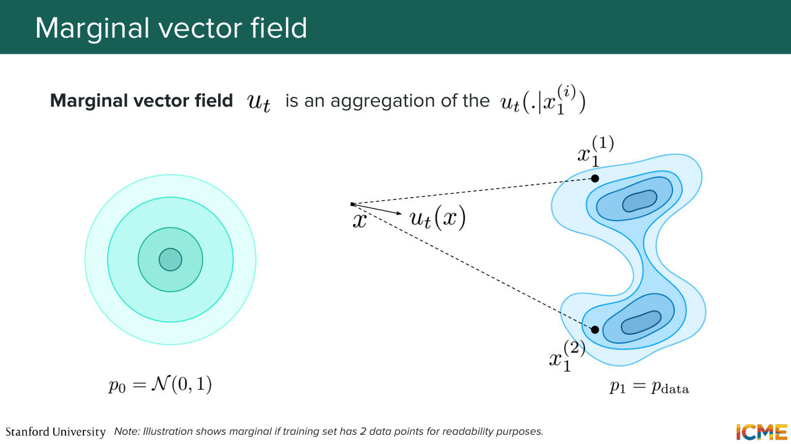
Shown briefly — discussed together with the adjacent slides.
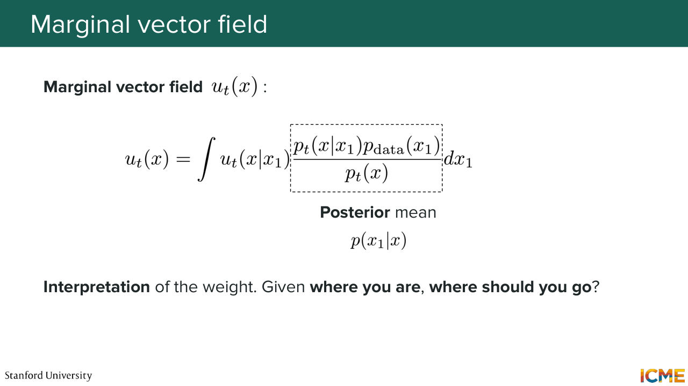
Shown briefly — discussed together with the adjacent slides.
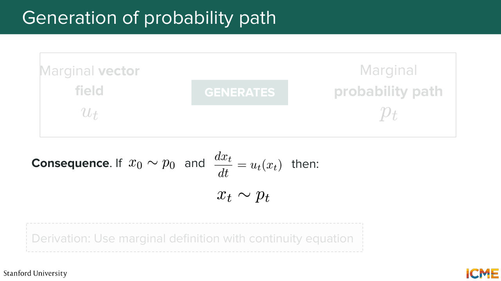
Shown briefly — discussed together with the adjacent slides.
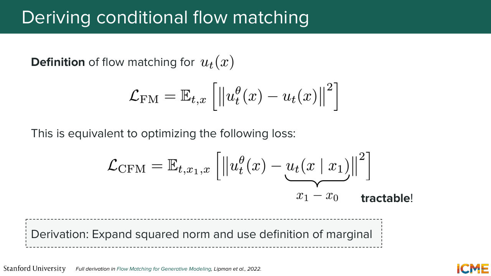
Shown briefly — discussed together with the adjacent slides.
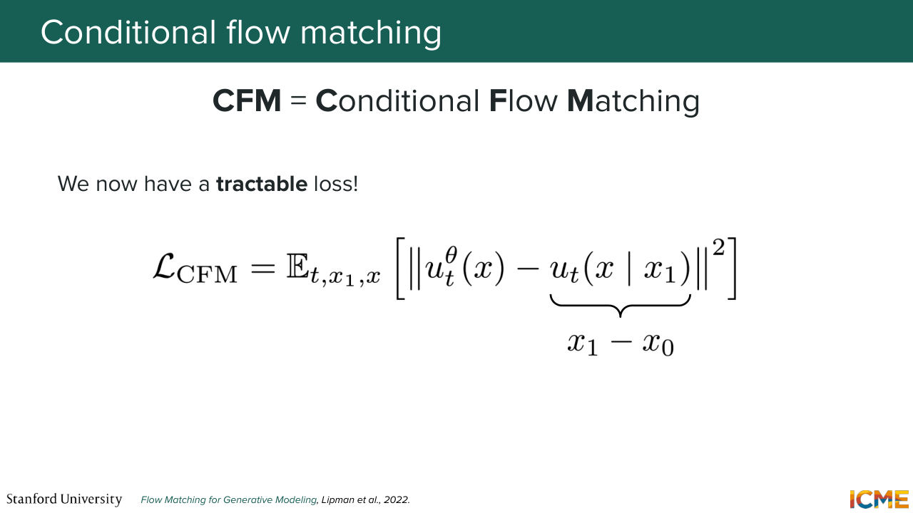
1:10:59 which is us wanting to learn a vector field that will allow us to go from p0 to p1. So here, what I'm going to tell you is that optimizing for the flow matching loss that I told you at the very beginning is equivalent to you optimizing for what
1:11:24 we call the conditional flow matching loss, which is given by here. And I'm going to tell you more about this for the next five minutes. So let me take this. So here, what we want is to have a tractable loss.
1:11:49 And if you look at the flow matching loss, it is still a loss that is quite complex. So our goal is to really make our loss as tractable as possible. So as a result what we're saying is that the loss of flow matching, which is given by this, so it's the expectation
1:12:18 of the squared distance of your learned vector field minus the marginal vector field that you constructed. So what we're saying is optimizing for the loss above is the same as optimizing for the conditional flow matching loss, which is this one.
1:12:52 So if we aggregate over time steps t and x drawn from the probability path dt of this expression, what I'm saying is that optimizing for this loss is the same as optimizing for the conditional flow matching loss, where the expectation is over t x1, and then x belonging to the conditional probability path.
1:13:27 And back to your question. This whole expression that we had here was ut of xt given x1, which was x1 minus x0. So this thing is super simple. It is just the thing that you want to learn minus x1 minus x0. Super simple. OK, so now why is it equivalent to optimize
1:14:03 on the flow matching and the conditional flow matching loss? That's another question. So if you remember, for score matching, we had a very similar question. So I'm going to give you the same trick. So let's assume you have distance squared of a minus B, which is basically what we have here.
1:14:28 And what you want is to optimize these losses with respect to the parameters of the model theta. So everything that you care here is only terms that are a function of theta. So a minus b that norm squared is equal to a squared minus 2 dot product of a and b plus b squared.
1:15:01 So ut theta x squared, this and this are the same. Perfect. So how about this term. The b term is actually not dependent on theta. So we actually don't care. So a is good. It's the same. b is not a function of theta. We don't care.
1:15:28 The only thing that is different between these two is the dot product of a and b. So this one and this one and this one and this one. So what we want to show is the expectation over t and x of this dot product is the same as the expectation over this. So t x1 and x over the conditional probability part of this one and this one.
1:15:55 We want to show that these two are the same. So I'm going to do this in two minutes. 1:16:10 OK. So let's suppose-- so we're going to go from one side and end up with another. So what I'm going to do is start from the dot product
1:16:31 of the conditional flow matching loss and end up with the one from the flow matching one. So what I'm going to compute is the expectation. And here, I'm going to say t x1 and x of the dot product of ut theta of x and your conditional vector field. So ut of x given x1.
1:17:05 So what I'm telling you is by definition of the expectation-- so this is just a bunch of integrals. So this is the integral over t over x1 and x of ut of theta of x dot product with the conditional vector field ut of x given x1. And this is over x1 and x so I'm going to say it's p data of x1.
1:17:37 And then the conditional probability path x given x1 dx1, dx, dt. So far so good? So here what we notice is that if we put this quantity here, this quantity here, and if I divide by dt of x and I do times dt of x, then what I'm
1:18:18 going to recognize is the marginal vector field that we have constructed. So this is going to be equal to the integral over t integral. So this integral over x1 is also going to come here. So integral over t, integral over x of ut theta of x.
1:18:52 And this ut of x, which is the marginal vector field, times this marginal probability path dt of x, dx, dt. And this is nothing else than the expectation over t and x, which is run from the marginal probability path of the dot product of ut theta of x
1:19:24 and the marginal vector field, which is exactly what we want. So what I'm showing you here is that the marginal vector field, the way we constructed it, allows us to optimize on a loss, the conditional flow matching loss, which is much more tractable, and leads us to the same gradients with respect to theta.
1:19:52 And so long story short, we have this loss, which is called the conditional flow matching loss, which is the expectation over t x1, which is run over the pdata, and then x drawn over the conditional probability path of a quantity that is extremely simple. So it's just the squared distance between the learned velocity, which is what you want to learn,
1:20:27 and the conditional vector field, which we saw was nothing else than just x1 minus x0. So it's a very tractable loss, and it does exactly what you want. Any questions? So it's a lot. Are we all clear with this?
1:20:58 OK, I'm going to say that it's OK if you feel like it's a lot. It is indeed a lot. So I'm going to recap the strategy. So what we said at the very beginning was that we had two different views of how we want to go from one distribution to another distribution. What we said was that there was this quantity called the vector
1:21:25 field, a.k.a. the velocity that was linked to how we could move our particles, so with the ODE dx over dt equal vector field that one, but also the continuity equation that linked the vector field with the probability path. So what we want is to find the vector field that will allow us to go from p0 to p1.
1:21:53 So what you need to do is to find first a probability path that goes from p1 to-- sorry, from p0 to p1. First you need to find that. And then you need to construct a vector field that indeed allows you to go from p0 to p1. So how do you do-- how do you do that? Well, you propose some quantities and you try to see if the continuity equation is indeed
1:22:24 satisfied. So that's step number one. Once you your vector field of interest, your goal now is to learn it. Because if you learn it, then what you can do is to integrate the ODE. Why do you want to integrate the ODE? It's because you want to go from x0 to x1.
1:22:50 Therefore, you need to learn your vector field. And here what we did is, in order to learn the vector field, we first thought of a very simple case of us wanting to go from the initial to a single point via the conditional probability path and the conditional vector field. So this is the simple case with the Dirac distribution
1:23:22 being the target distribution. And then what we said was OK, given this very simple case that is super tractable, let's try to match our initial distribution with the actual target one of interest, which is the whole data distribution, not just a single point, but the whole data distribution. And we proposed the marginal probability
1:23:50 path which satisfies t equals 0 equals p0 and t equal 1. It's equal to p data. So it was a valid probability path. And we also saw that the constructed vector field was actually generating that proposed marginal probability path. It was generating it, why? Because it satisfies the continuity equation, which
1:24:19 I said I don't have time to derive, but you just need to replace the quantities and see that the continuity equation is indeed satisfied. So given that we were finally with the vector field, that was something that was adapted to our use case. But now what we wanted to do was to learn it with the tractable loss.
1:24:47 So in this last part, what we did is show that the loss that we wanted to optimize was actually equivalent to another loss that was extremely tractable, which is the conditional flow matching loss. And the way we showed that was by showing that the gradient of this losses with respect to theta were equal, which is what I did here.
1:25:15 And then finally, we have our final loss function, which is ut theta of x minus x1 minus x0 expectation of that. So it's incredibly simple. So everything I told you is actually-- so a lot of it is coming from this paper that's called Flow Matching for Generative Modeling.
1:25:45 So I highly recommend reading it. It may not be the simplest to read, but I hope what I just told you actually will allow you to understand the formulas in there a bit better. But I didn't want to give it to Shervine before telling you a bit more about why we're calling
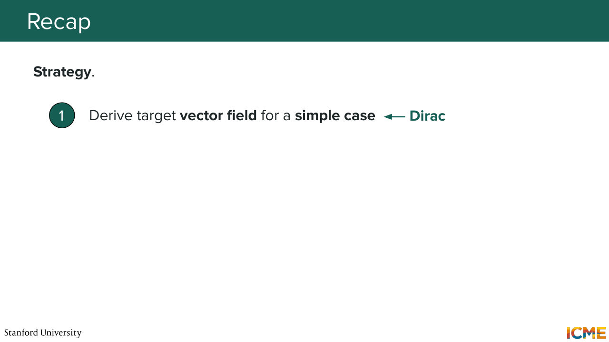
Shown briefly — discussed together with the adjacent slides.
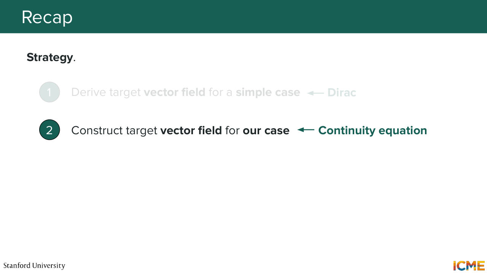
Shown briefly — discussed together with the adjacent slides.
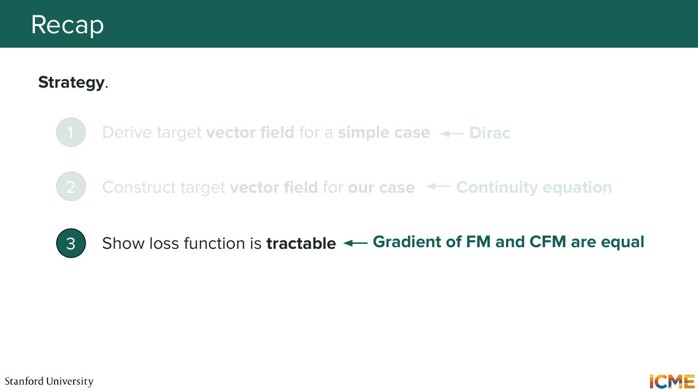
Shown briefly — discussed together with the adjacent slides.
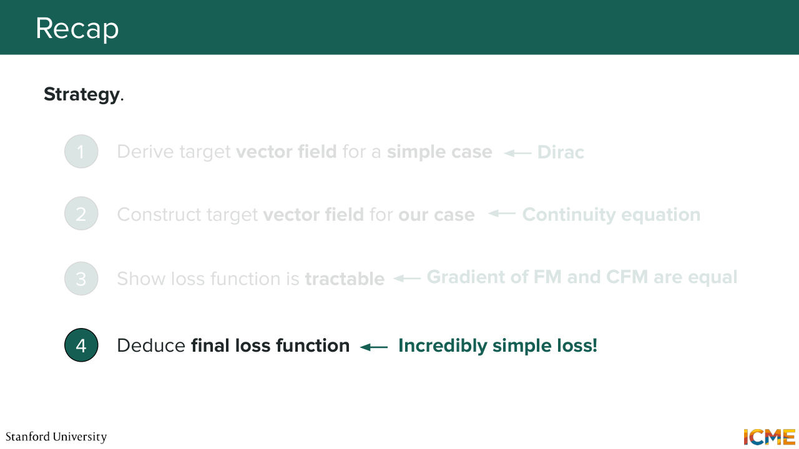
Shown briefly — discussed together with the adjacent slides.
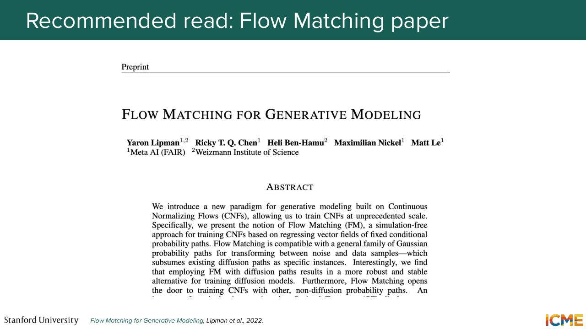
1:26:07 this whole thing flow matching. Because core matching, it was called core matching because you tried to match the score.
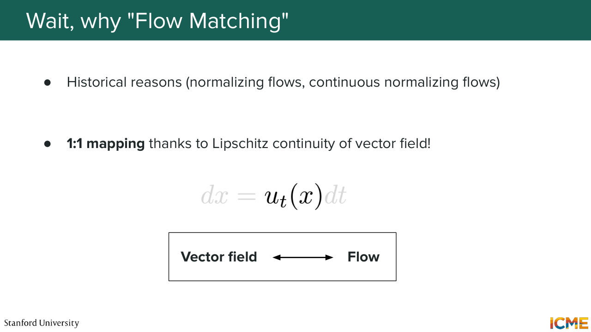
1:26:16 But here, we're not matching the flow, we're matching the velocity. So one natural question is, why is it not called velocity matching? Why is it not called vector field matching? Why is it called flow matching? So these points are a bit more informal. It's just a personal take on why that is the case. So one potential reason is, historically, these models which are flow models,
1:26:43 meaning trying to map a point to another via this psi t of x minus 0, they had the term flow in their names, and in particular the method that I mentioned that try to learn the vector field with maximum likelihood estimation. That one was called continuous normalizing flows. So one reason is maybe branding, but actually, I
1:27:13 want to get back to my earlier Lipschitz continuity comment. It turns out that if the vector field that you learn here is Lipschitz continuous, then what happens is that your trajectories, they're all unique.
1:27:36 So you actually have a mapping between vector fields that you learn and the flow. So if you're matching the velocity, you're also matching the flow. Now you may be wondering, OK, how do that the learned vector field is indeed Lipschitz continuous?
1:28:00 Well, we have not seen that yet. We're going to see that in lecture 5. But the model that is behind this learned vector field is something that is composed of matrix multiplications and some smooth activation functions. All of that is Lipschitz continuous.
1:28:26 So what you will learn is actually Lipschitz continuous vector field with respect to x, which is going to give you a one-to-one mapping between velocity and flow. And we have two minutes. So bear with me.
1:28:49 In two minutes, I'm going to cover how we train and do inference. But it's going to be very easy.
1:28:56 So let's see how we do training. So as I mentioned, the loss is extremely simple. And so what we do is we sample the noise. So x0 from your standard Gaussian distribution, your clean image, so x1 from your training set, which is pdata, and you also sample your time step. And what you do is you construct xt, your noise image. And what I'm telling you is thanks to the loss function
1:29:30 that we derived, what we do is we use xt, the noise image and t
1:29:38 to predict x1 minus x0, which is the conditional vector field via this model that is your vector field model. And you're going to compute the loss and backpropagate. That's how you do training.
Shown briefly — discussed together with the adjacent slides.
Shown briefly — discussed together with the adjacent slides.
1:29:55 Now, how do you do inference? Well, inference, you just sample from an easy data distribution. And here it's, again, standard, normal distribution. And what you're going to do is to numerically solve the ODE.
1:30:12 So what you do is you go time step to time step, and you use your learned vector fields, and you end up with your final estimated image x1. And that's how you do inference. And with that, I'm going to give it to Shervine.
1:30:32 Thank you, Afshine. So now we're going to see in a more visual manner
1:30:37 the training process and discuss some edge cases and how to solve them in practice. So you remember the training process that Afshine just mentioned. You sample x0 from the normal distribution, you sample x1 from your training set. And what you do is that you draw a straight line between the two, and you try to fit the velocity to this x1 minus x0.
1:31:06 Now I want you to imagine that we do that for a given pair.
1:31:11 And now for another pair. And suppose that these pairings intersect at a given point. And let's suppose that this intersection is for a same t. So in other words, we're trying to fit the loss at a same x, at a same T on two different vectors. So who knows what the resulting learned velocity will be?
1:31:39 So it cannot be two velocities right. We cannot have two vectors at a single point. It has to be one. So we have this MSE loss that will make it such that it will be an average of all the vectors that we tried to fit at that given point points x
1:32:03 and at given point t and you see that as being a problem or, so what does that mean? So here in practice, let's say you're at inference time and you want to go from, let's say, x0 to x1. And let's say you have learned a vector fields of velocity that doesn't go to x1. That goes in an average direction.
1:32:33 Are you going to be able to go to x1? No, right? So the thing that will occur is that you're going to have something averaged that might repel the trajectories that you try to learn into different directions. But be reassured, we showed that these learned vector fields was such that if you
1:33:01 sample a point in the normal distribution and follow the learned vector field, you land into a distribution land, that will be your distribution pdata. So that part is fine. But still, you have this property that the learned trajectories are not going to be the same as the ones that you teach your model.
1:33:25 And that is a source of what I would call complexity, where you teach a model that doesn't follow what you said at test time. So that is inherently-- so your intuition could make you feel that this is not efficient. And the second thing that I want to say is that you could have this phenomenon happening, even though the points of intersection are not at the exact same T, because in practice, you're
1:33:59 going to learn this vector field with a neural network. And neural network are going to be a class of functions that are going to be smoothing things in space. So you won't have a drastic change of velocity for neighboring t's. And so because one thing that you could have told me is, but Shervine, that is never going to happen. 01 is an interval with infinitely many numbers.
1:34:30 You're never going to draw the same t, and you would be right. And I'm just saying that it could be valid for neighboring t's. And more importantly, let's say you sample your point x0 out of your normal distribution. What is going to be your issue here? Afshine mentioned that you want to integrate the ODE at inference time. And we had seen last time that you want to find methods that optimize that number of NFEs
1:35:04 in such a way that you can find your target sample in a minimum amount of steps. And when you have a path that is getting curved, so you don't have these straight lines at inference time, you're not going to be able to solve that in a single step. Because let's say you use Euler. Euler is estimating the velocity at the beginning points. And if you try to do it in a single step,
1:35:29 it will end up somewhere else. It will follow a straight path, whereas the curve isn't going to be taken into account. And you're going to tell me, but Shervine, you have tricks in your pockets. Last time you talked about a DPM solver in a different setting that was able to reframe things in an exact way. Well, no.
1:35:53 This time, the ODE that we want to integrate has no linear components. It's all non-linear because here we're directly learning that velocity field. So no DPM solver here. You need to use traditional sampler techniques. So not quite happy.
1:36:17 We're happy but not quite. So now I'm going to walk you through the intuition of a retraining or fine tuning procedure that is called reflow.
1:36:30 And so first I'm going to recap the training procedure that we have already. So you sample a point x0, you sample a point x1, you draw a path and then you fit a velocity on it. So it is called in that paper a one rectified flow model. And you obtain trajectories that we saw we're going to be curved.
1:36:55 And one idea that we have here, one temptation, is to locate these new pairings. So you started from point x0. You integrated the ODE. You ended up at somewhere in the distribution of pdata. You're tempted to use these new pairs as your new pairings, because they will be, by construction,
1:37:22 in such a way that the velocity field will carry the trajectory directly there. So the reflow procedure says, OK, let's take these new pairs as those that we use to retrain the model. So this will be our new lines that we fit our new model. And so this is the reflow step. And you do that process again and again
1:37:52 until your lines becomes straighter. And once that is the case, at inference time,
1:37:59 you're able to use a limited amount of inference steps in order to get your sample in the pdata space. So does this procedure make sense? Yep? So the comment is if you retrain, then the two points are going to be from the new distribution.
1:38:28 So the magic in all of this-- so first, you're going to keep that Gaussian distribution at the beginning. That will not change. And at the end, we're going to see that there are some properties that makes it such that the resulting points that you get still preserve the distribution p data. So there is some theoretical justification that it does follow pdata.
1:38:53 But this is a great point. We're going to discuss that in more detail in two slides. Any other questions or comments? OK, so you're right to be skeptical. So this works because of two things. So first, actually, one slide. So we need to show that this follows the distribution pdata.
1:39:20 So I'm not going to give you the whole proof, just the gist of it. So you start by defining this random variable that starts at x0. And you integrate the ODE to end up in the new space and define this velocity for the x random variable and the proof to show that the law that you get for the end distribution after a reflow procedure goes through,
1:39:53 showing that these two probability flows respect the same continuity equation. And with some uniqueness theorem and the presence of initial conditions at the fact that dt equals 0 is still the Gaussian distribution, you can show that it's valid for all t and, in particular, t equals 1.
1:40:22 So yeah, just hand-waving the proof here. So it's theoretically the case.
1:40:29 But you are right to be skeptical, because once you integrate the ODE, you have errors that come in from two sources. So the first error is the discretization error. So as we said, we're sampling these new points. So maybe you have some errors in the way you do these steps. So you don't necessarily end up in a theoretical location you should be at.
1:40:55 And the second point is that you're operating off of a learned vector field that is approximated by a neural network, and it is possible that you haven't learned it perfectly. I mean, of course it's sure that you haven't learned it perfectly. And the quality of your results will be a function of how well you learn that vector field and of your discretization errors.
1:41:22 And we're going to see very soon that this is one of the reasons why we don't perform this procedure too many times, because the degradation is going to be a trade off to balance here. So this is the first point I wanted to justify. The second point I wanted to justify is we hand waved the fact that the flows like the trajectories were getting straighter, and there is a mathematical way of writing it down and proving it.
1:41:55 And this is also something that is being proven in case you're interested. And for the interest of time, I'm not going to be covering it, but that s quantity quantifies straightness and compares the actual velocity with the theoretical one. And we show that it decays with a good speed. And this is why we're saying it's getting straighter.
1:42:24 And exactly as we discussed, the reflow procedure is one that you wouldn't want to do too many times, but usually, one procedure is already great. And the goal is for us to use a very simple sampling techniques, such as Euler, optimally in just a few steps, finding the right solution. And of course, it isn't a free lunch. It comes at a trade off. So you're trading off simplicity and potentially lower quality
1:42:56 for faster inference time speeds.
1:43:01 OK, great. So this past three lectures, including this one, we've come across these concepts of diffusion, score matching,
1:43:12 and now flows, flow matching. And I want to spend five minutes together
1:43:17 to tie all of these frameworks together in a way that will hopefully show links between them and the fact that we are solving the same category of problems but from different lenses. And in order to do that, I'm going to look at each of the processes that we defined and then look at the difference with respect to each method. So the first one is the forward process.
1:43:46 So it's a long time ago. Already two weeks ago, we talked about DPM and all this class of discrete time, diffusion. And then we saw in score-based diffusion world that if you reframed these equations and converted it into continuous time, put some delta t to 0, you could get some SDE formulation that was equivalent to it, Where we saw at the DPM solver section
1:44:20 that actually, in diffusion space, you could approximate-- I mean, you could always assume that f of x and t was linear in x. And this is why. So it's something that we haven't seen so far but I'm telling you that you have a nice closed form expression with respect to f and g of xt. And now we saw today that you can write down xt as an interpolation between x0 and x1 in flow matching.
1:44:51 And now we're going to see that in all of these methods, you start from a clean sample. So in a diffusion space, we start the clean sample from t equals 0. But in flow matching space, we saw that the notation was reversed. Clean sample is t equals 1. And on the other side of the spectrum, you have noise, which was in diffusion world t equals big t.
1:45:19 And here it's t equals 0. So you're here drawing an interpolation between the two
1:45:26 in each of these cases. Now when we look at the loss functions, we saw that the diffusion view of writing things down
1:45:38 was focusing on noise. The score matching view was linking scores, and you had a nice relationship between noise and score.
1:45:51 And in the flow matching world, you were directly fitting the velocity field such that you have the simplest ODE to integrate in the end. Now, when we look at the generation process, we saw in the diffusion world that you had all these steps to go through
1:46:11 with some stochasticity, which you also had in the score-based diffusion world, and you had for the first two, a deterministic counterpart. And you will notice that the flow matching one doesn't have such a balance because it's deterministic to start with. And I'm just showing you some relationships between all
1:46:36 these methods, but actually, there is a whole theory linking these concepts in a very nice way.
1:46:42 And this is why I recommend if you're interested. So it's out of scope for this class. And just if you're interested, to take a look at the paper called Stochastic Interpolants that writes down equations that links all of these together. And turns out that r of noise, score, and velocity, if you know two of them, you can deduce the third one. And that paper designs a problem space
1:47:13 that is bigger than what each of these frameworks detailed. And all of these frameworks can live in the same unified framework. And with that, I hope you have a great weekend.

1:47:28 Stanford CME29